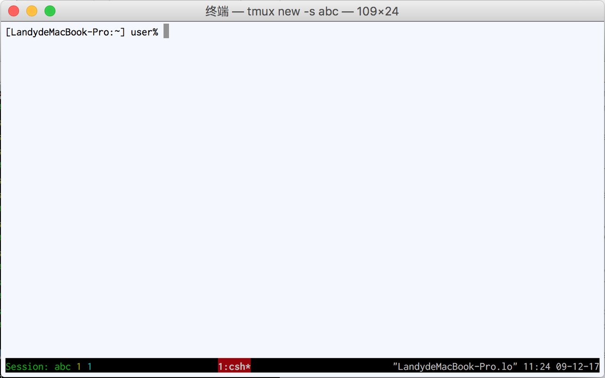

Tmux Introduction II
定制我们的Tmux.
启动Tmux时，会自动去source ~/.tmux.conf文件.
先来看看我的.tmux.conf文件内容.
# It is for tmux-2.4
# Set the base index for windows to 1 instead of 0
set -g base-index 1
# Set the base index for panes to 1 instead of 0
setw -g pane-base-index 1
# Reload the file with Prefix r
bind r source-file ~/.tmux.conf \; display "Reloaded!"
# splitting panes
bind | split-window -h
bind - split-window -v
# moving between panes
bind h select-pane -L
bind j select-pane -D
bind k select-pane -U
bind l select-pane -R
# Pane resizing
bind -r H resize-pane -L 2
bind -r J resize-pane -D 2
bind -r K resize-pane -U 2
bind -r L resize-pane -R 2
# Set the default terminal mode to 256color mode
set -g default-terminal "screen-256color"
# set the status line's colors
set -g status-fg white
set -g status-bg black
# set the color of the window list
setw -g window-status-fg cyan
setw -g window-status-bg default
setw -g window-status-attr dim
# set colors for the active window
setw -g window-status-current-fg white
setw -g window-status-current-bg red
setw -g window-status-current-attr bright
# pane colors
set -g pane-border-fg green
set -g pane-border-bg black
set -g pane-active-border-fg white
set -g pane-active-border-bg yellow
# Command / message line
set -g message-fg white
set -g message-bg black
set -g message-attr bright
# Status line left side
set -g status-left-length 40
set -g status-left "#[fg=green]Session: #S #[fg=yellow]#I #[fg=cyan]#P"
# Update the status bar every sixty seconds
set -g status-interval 60
# Center the window list
set -g status-justify centre
# Mouse support
set-option -g mouse on
# Move like vi
setw -g mode-keys vi
上一篇介绍提到buffer模式中的移动以及复制, 当我们用命令"setw -g mode-keys vi"时，我们在buffer模式移动时就和vi一样了, 比如"gg"到buffer首端, "G"到buffer末端, 空格开始选择要copy的部分, 回车退出copy部分的选择, "prefix ]"是黏贴.
调整好了再看看tmux的样式.

Comments